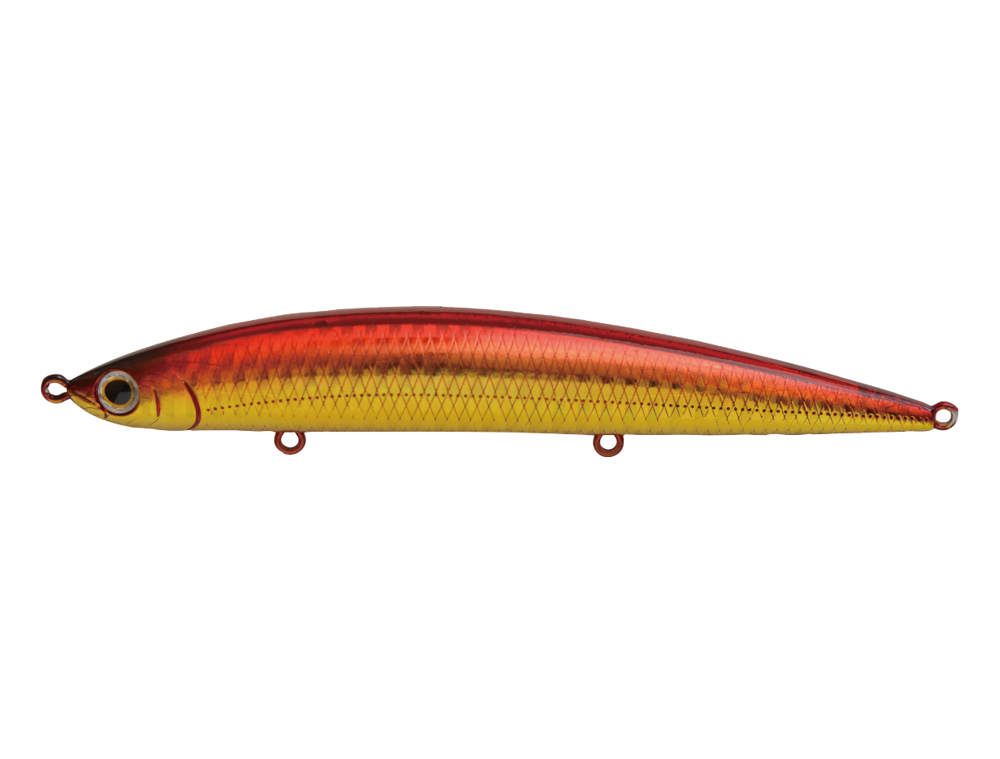
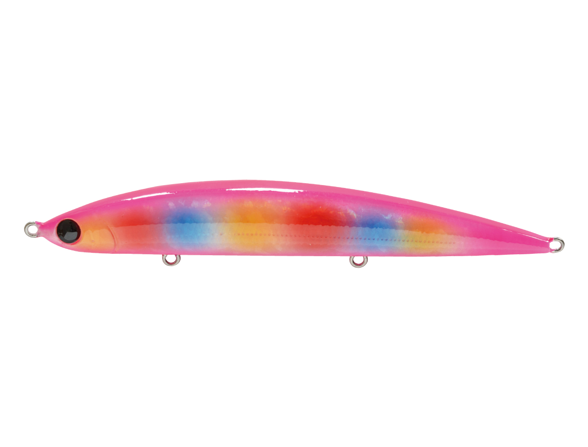
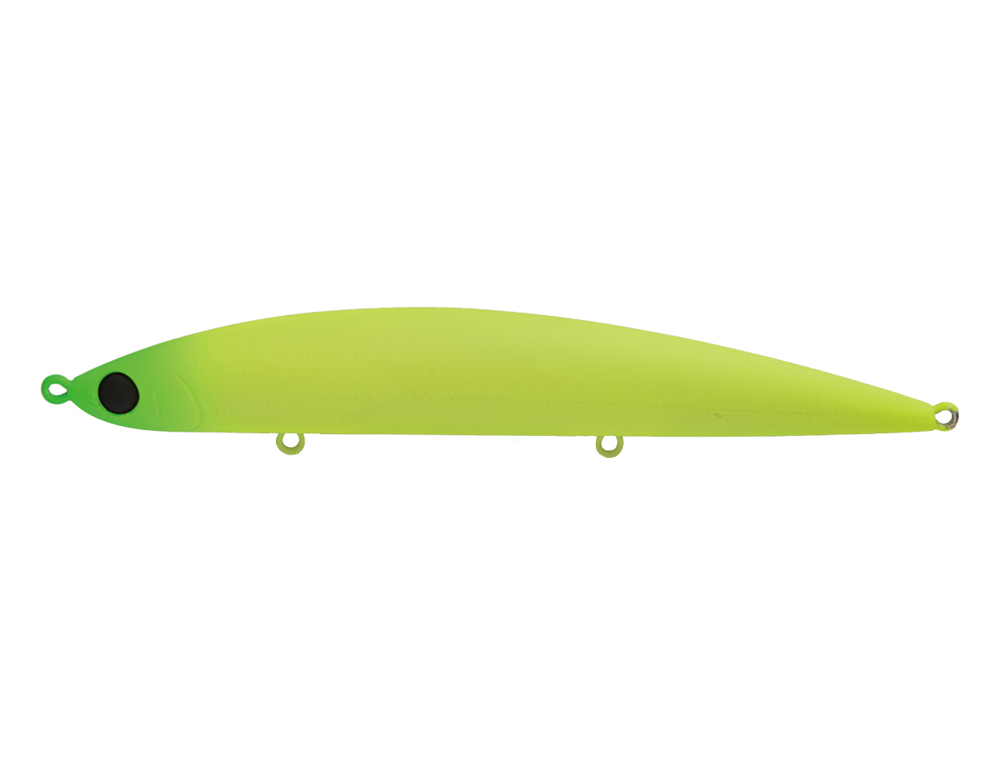
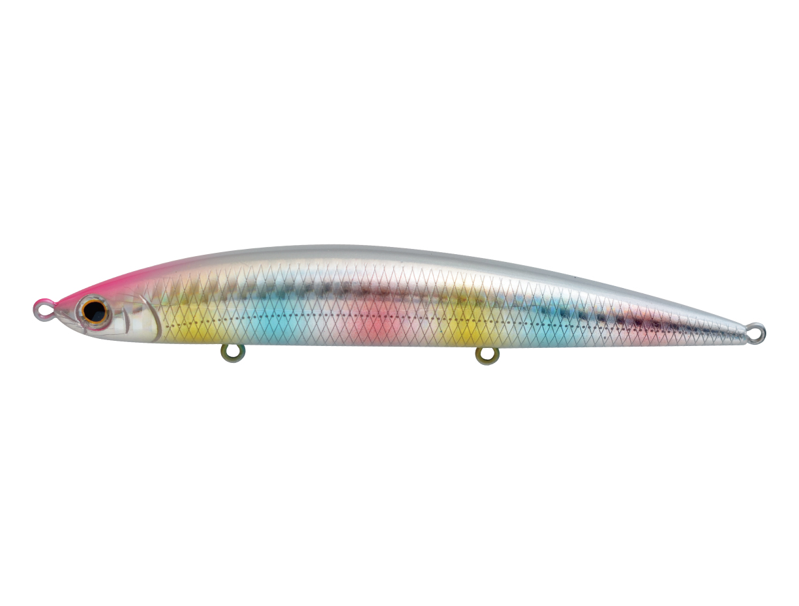

アスリート12SSP
（Athlete 12SSP）
アスリート12SSPはJackson（ジャクソン）のシンキングペンシルです。
遠浅サーフ攻略のため、アスリートシリーズから生まれた120mmのシンキングペンシル。一般的なシンペンとは考え方が大きく違う後方重心設計で、メタルジグに匹敵する飛距離と、着水後すぐにボトムを取れる速いフォールを両立しています。

画像出典:Jackson公式HP
スペック
- メーカー
- Jackson（ジャクソン）
- タイプ
- シンキングペンシル
- 全長
- 120mm
- 自重
- 33g
- フック
- 3フックシステム
- ターゲット
- ヒラメ・マゴチ・青物・シーバス
- 価格
- 2,310円（税込）
▼今すぐチェック

アスリート12SSPの特徴
メタルジグ並みに飛んで、すぐ沈み、スローに誘えるシンペン
-
後方重心でメタルジグに匹敵する飛距離
キャスト時の飛行姿勢がブレにくく、誰が投げても安定した飛距離が出せます。120mmのボディサイズながら、飛距離はメタルジグに匹敵します。
-
着水後すぐにボトムが取れる
フリーフォールではお尻から垂直に落ちて、すぐにボトムを取れます。海底に潜むヒラメ・マゴチに対して、早くボトムを取ってスローで誘えるのが強みです。
-
ミノーのように使えるロールアクション
スローリトリーブではお尻を大きく振るロール、巻きスピードを上げるとウォブンロールに変化。引き抵抗もほどよくあり、シンキングペンシルというよりミノーを使っているイメージで扱えます。
アスリート12SSPの使い方
遠投して着水後にボトムまで沈め、底を擦らない程度のスローリトリーブで引くのが基本。遠浅のサーフでも、ボトムを擦らずにゆっくり誘えます。
テンションを掛けたカーブフォールでは、お尻下がりのまま細かくローリングしながら落ちるので、フォールでも誘えます。
アスリート12SSPの得意な状況
遠浅で水深の浅いサーフ、沖のブレイクまで届けたいとき。ミノーでは届かない距離をミノーのような動きで探りたいときに出番です。青物やシーバスにも使えます。
ワンポイント
下から突き上げるようなフラットフィッシュ特有のバイトを拾えるよう、120mmのボディに3フックを搭載。ショートバイトが多い日でもフッキングに持ち込みやすくなっています。
アスリートSSPの使い分け
| モデル | 全長／自重 | 特徴 |
|---|---|---|
| アスリート12SSP | 120mm／33g | 後方重心で飛距離とボトム到達の速さ重視。遠浅サーフのヒラメ・マゴチに |
| アスリート14SSP | 140mm／40g | 貫通ワイヤー搭載。マダイや大型青物、座布団ヒラメ、ランカーシーバスに。磯からの使用も意識した設計 |
| アスリート+ 16FVG | 160mm／39g | フローティングミノー。サーフ・河口の大型魚を大きなシルエットで狙うときに |
14SSPは12SSPより重心をやや前にして浮き上がりを抑え、大きなS字を描くウォブンロールで誘います。サーフのヒラメ中心なら12SSP、磯や大型魚狙いなら14SSPと使い分けましょう。
人気カラー
ラインナップから4色を紹介します（カラー名は公式の表記のまま）。

WRD ダブルアカキン赤金の定番カラー。朝マヅメや濁り潮で、ヒラメにアピールしたいときに。

GCD グローピーチキャンディピンクに虹色の玉模様が入ったグローカラー。ローライトや濁りが入った日に。

MLC マットライムチャート光を反射しないマットなチャート。濁り潮でシルエットを見せたいときに。

SRB ホロレインボーホロのフラッシングが強いカラー。晴れた日の澄み潮に。
画像出典:Jackson公式HP
アスリート12SSPに似ているルアー
-
 アスリート+ 16FVG モンスターエディション
ジャクソン
詳細はこちら＞
アスリート+ 16FVG モンスターエディション
ジャクソン
詳細はこちら＞
同じアスリートシリーズの160mmフローティングミノー。大きいシルエットで見せたいときに。
-
 フリッド125S
ブルーブルー
詳細はこちら＞
フリッド125S
ブルーブルー
詳細はこちら＞
125mm・37gのシンキングペンシル。同じクラスのサイズで、ローテーションの1本として。
-
 オーバードライブ107S
ダイワ
詳細はこちら＞
オーバードライブ107S
ダイワ
詳細はこちら＞
107mm・40gのシンキングペンシル。もう少し小さいシルエットで遠投したいときに。